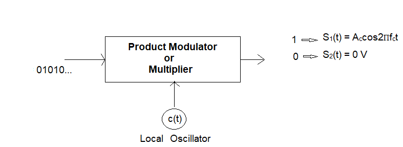

Pass band implementation of Amplitude shift keying, Frequency Shift Keying, Binary Phase Shift Keying: Generation and Detection
Passband Amplitude Shift Keying (ASK)
Theory:
Amplitude Shift Keying (ASK) is a fundamental digital modulation technique in which the amplitude of a high-frequency sinusoidal carrier is varied in accordance with the digital information signal. In passband ASK, the modulated signal is centered around a carrier frequency, enabling efficient transmission over band-limited channels such as radio frequency (RF) links and optical communication systems.
In a binary ASK (BASK) system, the binary symbol '1' is represented by transmitting a carrier signal of amplitude Ac and frequency fc over the bit duration Tb, whereas the binary symbol '0' is represented by the absence of the carrier. Due to this characteristic, binary ASK is also referred to as On-Off Keying (OOK).
Baseband vs Passband in ASK:
Baseband Signal: The input digital data represented as a unipolar or bipolar pulse train (e.g., 0 V for binary '0', +V for binary '1'). Its frequency components are centered around zero.
Passband Signal: The carrier amplitude is modulated according to the baseband signal. For BASK (OOK), the transmitted signal is: \[ s(t) = \begin{cases} A_c \cos(2 \pi f_c t), & \text{for binary '1'} \\ 0, & \text{for binary '0'} \end{cases} \] Here, \(A_c\) is the carrier amplitude and \(f_c\) is the carrier frequency.
Passband ASK Transmitter:

Fig 1: Passband ASK Transmitter
The input binary sequence, represented as a unipolar pulse train, is multiplied with a sinusoidal carrier wave to produce the ASK signal.
Passband ASK Receiver (Coherent Detection):
At the receiver, coherent detection is commonly employed for demodulation. This technique requires the generation of a local carrier that is synchronized in both frequency and phase with the transmitted carrier.
The received signal is multiplied by the synchronized carrier and subsequently passed through a low-pass filter or integrator over the bit duration Tb.
- For binary '1': the integrator output is proportional to the signal energy, approximately Ac2Tb/2.
- For binary '0': the integrator output is ideally zero in the absence of noise.
A decision device (threshold detector) compares the output with a predefined threshold to determine the transmitted symbol.

Fig 2: Passband ASK Receiver
The objective of the receiver is to reliably distinguish between the presence and absence of the carrier in the received passband signal.
Constellation Diagram

Fig 3: BASK Constellation Diagram
The constellation diagram represents the equivalent baseband (signal space) representation of the passband ASK signal. ASK is a one-dimensional modulation scheme and can be represented using a single orthonormal basis function.
The basis function is defined as:
φ1(t) = √(2/Tb) cos(2πfct), 0 ≤ t ≤ Tb
Using this basis function, the transmitted signals are:
- s1(t) = √Eb φ1(t) → represents binary '1'
- s2(t) = 0 → represents binary '0'
Thus, the signal points are:
Symbol '1': P1 = (√Eb, 0)
Symbol '0': P0 = (0, 0)
The Euclidean distance between these points is √Eb, which determines the noise immunity of the system. Higher-order ASK schemes use multiple amplitude levels, resulting in additional constellation points along the in-phase axis.
Effect of Noise on Passband ASK
In practical communication systems, the performance of passband ASK is significantly influenced by channel impairments such as noise and fading. When transmitted through an Additive White Gaussian Noise (AWGN) channel, the received signal can be expressed as:
y(t) = s(t) + n(t)
where s(t) is the transmitted signal and n(t) represents the noise component. The presence of noise introduces random amplitude variations, which may result in incorrect symbol decisions and increased bit error rate (BER).
In wireless environments, Rayleigh fading further degrades performance due to random fluctuations in signal amplitude caused by multipath propagation. These variations can significantly reduce detection accuracy, especially in low signal-to-noise ratio (SNR) conditions.
Therefore, although passband ASK is simple to implement, it exhibits limited robustness in the presence of noise and channel impairments compared to other digital modulation techniques.